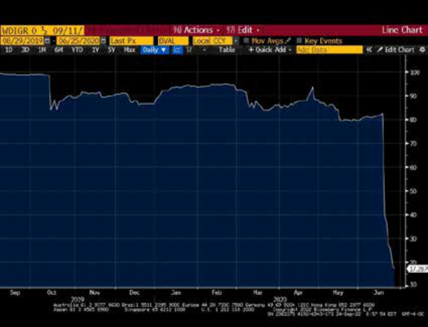

Learning Module 14 Credit Risk - Part 2: Credit Rating Agencies and Credit Ratings
Volume 6: Fixed Income
Learning Module 14 Credit Risk
Part 2/4: Credit Rating Agencies and Credit Ratings (PDF Pages 369–374)
Tập 6: Thu nhập Cố định (Fixed Income)
Học phần 14: Rủi ro Tín dụng (Credit Risk)
Phần 2/4: Các Tổ chức Xếp hạng Tín nhiệm và Xếp hạng Tín nhiệm (Trang PDF 369–374)
| debtholders have access to unpledged assets, while only secured debtholders have access to specific pledged assets as an additional repayment source. |
|---|
| 3. Which of the following factors are associated with a lower probability of default and higher credit quality for a corporate issuer? |
| A.Higher profitability, higher coverage, and higher leverage |
| B.Higher profitability, lower coverage, and lower leverage |
| C.Higher profitability, higher coverage, and lower leverage Solution: |
| C is correct. Higher profitability, higher coverage, and lower leverage are associated with a lower probability of default and higher credit quality for a corporate issuer. |
| 4. A bond investor analyzing Broadvue Corporation’s unsecured debt esti- mates a POD of 2% and an LGD of 80%. Using this information to approxi- mate the annual credit spread and observing an actual credit spread of 200 bps per year, which of the following statements is correct? |
| A.An investor would be fairly compensated for assuming Broadvue’s credit risk. |
| B.An investor would be less than fairly compensated for assuming Broadvue’s credit risk. |
| C.An investor would be more than fairly compensated for assuming Broadvue’s credit risk. Solution: |
| C is correct. Since POD × LGD = 1.60% and the credit spread is 2.00%, Credit Spread > POD × LGD and the investor would expect to be more than fairly compensated for assuming Broadvue’s credit risk. |
đều có quyền tiếp cận các tài sản chưa cầm cố (unpledged assets), trong khi chỉ các chủ nợ có bảo đảm mới có quyền tiếp cận các tài sản cầm cố cụ thể (specific pledged assets) như một nguồn trả nợ bổ sung.
- Những yếu tố nào sau đây gắn liền với xác suất vỡ nợ thấp hơn và chất lượng tín dụng cao hơn đối với một tổ chức phát hành doanh nghiệp?
-
A. Khả năng sinh lời cao hơn, khả năng trang trải nợ (coverage) cao hơn, và đòn bẩy cao hơn
-
B. Khả năng sinh lời cao hơn, khả năng trang trải nợ thấp hơn, và đòn bẩy thấp hơn
-
C. Khả năng sinh lời cao hơn, khả năng trang trải nợ cao hơn, và đòn bẩy thấp hơn
-
Lời giải:
C là đáp án đúng. Khả năng sinh lời cao hơn, khả năng trang trải nợ cao hơn và đòn bẩy thấp hơn gắn liền với xác suất vỡ nợ thấp hơn và chất lượng tín dụng cao hơn đối với một tổ chức phát hành doanh nghiệp.
- Một nhà đầu tư trái phiếu phân tích khoản nợ không có bảo đảm của Tập đoàn Broadvue ước tính $\text{POD}$ là 2% và $\text{LGD}$ là 80%. Sử dụng thông tin này để xấp xỉ phần bù tín dụng hàng năm và quan sát thấy phần bù tín dụng thực tế là 200 bps mỗi năm, phát biểu nào sau đây là đúng?
-
A. Nhà đầu tư sẽ được đền bù thỏa đáng (fairly compensated) khi gánh chịu rủi ro tín dụng của Broadvue.
-
B. Nhà đầu tư sẽ được đền bù thấp hơn mức thỏa đáng (less than fairly compensated) khi gánh chịu rủi ro tín dụng của Broadvue.
-
C. Nhà đầu tư sẽ được đền bù cao hơn mức thỏa đáng (more than fairly compensated) khi gánh chịu rủi ro tín dụng của Broadvue.
-
Lời giải:
CREDIT RATING AGENCIES AND CREDIT RATINGS
C là đáp án đúng. Vì $\text{POD} \times \text{LGD} = 1.60\%$ và phần bù tín dụng là $2.00\%$, ta có $\text{Credit Spread} > \text{POD} \times \text{LGD}$ và nhà đầu tư có thể kỳ vọng được đền bù cao hơn mức thỏa đáng khi gánh chịu rủi ro tín dụng của Broadvue.
CÁC TỔ CHỨC XẾP HẠNG TÍN NHIỆM VÀ XẾP HẠNG TÍN NHIỆM (CREDIT RATING AGENCIES AND CREDIT RATINGS)
describe the uses of ratings from credit rating agencies and their limitations
mô tả công dụng của xếp hạng tín nhiệm (credit ratings) từ các tổ chức xếp hạng tín nhiệm (credit rating agencies) và những hạn chế của chúng
The three major credit rating agencies—Moody’s Investors Service (“Moody’s”), Standard & Poor’s (“S&P”), and Fitch Ratings (“Fitch”)—play a central role in the credit markets. The rating agencies independently assess issuer credit risk on a forward-looking basis using quantitative and qualitative analysis. For most outstanding corporate and sovereign bonds, at least two of the agencies provide credit ratings , a symbol-based measure of the potential risk of default of a particular bond or issuer of debt.
Ba tổ chức xếp hạng tín nhiệm lớn — Moody’s Investors Service (“Moody’s”), Standard & Poor’s (“S&P”), và Fitch Ratings (“Fitch”) — đóng vai trò trung tâm trên các thị trường tín dụng. Các tổ chức xếp hạng độc lập đánh giá rủi ro tín dụng của tổ chức phát hành trên cơ sở hướng tới tương lai (forward-looking basis) bằng cách sử dụng phân tích định lượng và định tính. Đối với hầu hết các trái phiếu doanh nghiệp và trái phiếu chính phủ đang lưu hành, ít nhất hai trong số các tổ chức này cung cấp xếp hạng tín nhiệm (credit ratings), một thước đo dựa trên ký hiệu về rủi ro vỡ nợ tiềm tàng của một trái phiếu hoặc một tổ chức phát hành nợ cụ thể.
Many bond investors use credit ratings to provide direct and easy comparability of the relative creditworthiness of all bond issuers, within and across industries and bond types, although there is some debate about ratings comparability across the types of bonds. Changes in credit ratings provide a broad overview of changing credit market conditions. In individual bond or issuer cases, they may trigger covenants, changes to debt pricing for step-up bonds, or other contractual clauses. Credit migration risk , or downgrade risk, is the risk that a bond issuer’s creditworthiness deteriorates, or
Nhiều nhà đầu tư trái phiếu sử dụng xếp hạng tín nhiệm để có sự so sánh trực tiếp và dễ dàng về mức độ tín nhiệm tương đối của tất cả các tổ chức phát hành trái phiếu, trong cùng một ngành và giữa các ngành cũng như các loại trái phiếu khác nhau, mặc dù vẫn có một số tranh luận về khả năng so sánh của các mức xếp hạng giữa các loại hình trái phiếu khác nhau. Những thay đổi trong xếp hạng tín nhiệm cung cấp một cái nhìn tổng quan rộng lớn về các điều kiện thị trường tín dụng đang thay đổi. Trong các trường hợp trái phiếu hoặc tổ chức phát hành riêng lẻ, chúng có thể kích hoạt các điều khoản ràng buộc (covenants), làm thay đổi mức định giá nợ đối với trái phiếu có lãi suất bậc thang (step-up bonds), hoặc các điều khoản hợp đồng khác. Rủi ro dịch chuyển tín dụng (Credit migration risk), hay rủi ro bị hạ bậc tín nhiệm (downgrade risk), là rủi ro mức độ tín nhiệm của tổ chức phát hành trái phiếu bị suy giảm, hay
migrates to a lower rating, leading investors to believe the risk of default is higher. Credit ratings are also widely used to satisfy regulatory, statutory, and contractual requirements.
dịch chuyển xuống một mức xếp hạng thấp hơn, khiến các nhà đầu tư tin rằng rủi ro vỡ nợ đã cao hơn. Xếp hạng tín nhiệm cũng được sử dụng rộng rãi để đáp ứng các yêu cầu của cơ quan quản lý, theo luật định và theo hợp đồng.
Ratings are issued on behalf of the issuer. To issue a rating, the rating agencies often meet with the issuer and in some cases receive access to material non-public information, such as financial projections unavailable to public investors. Rating agencies monitor the ongoing performance of debt issuers once a rating is issued, adjusting ratings higher as credit risk decreases or lower if a default is deemed more likely. In addition, credit agencies may issue a positive or negative outlook as creditworthiness improves or deteriorates but a rating change is not yet warranted.
Xếp hạng được ban hành thay mặt cho tổ chức phát hành. Để ban hành một mức xếp hạng, các tổ chức xếp hạng thường gặp gỡ tổ chức phát hành và trong một số trường hợp được quyền tiếp cận thông tin trọng yếu chưa công bố (material non-public information), chẳng hạn như các dự phóng tài chính không phổ biến cho các nhà đầu tư đại chúng. Các tổ chức xếp hạng theo dõi hoạt động liên tục của các tổ chức phát hành nợ sau khi xếp hạng được ban hành, điều chỉnh tăng xếp hạng khi rủi ro tín dụng giảm xuống hoặc hạ xếp hạng nếu khả năng vỡ nợ được đánh giá là cao hơn. Ngoài ra, các tổ chức tín nhiệm có thể đưa ra triển vọng tích cực hoặc tiêu cực (positive or negative outlook) khi mức độ tín nhiệm cải thiện hoặc suy giảm nhưng chưa đủ cơ sở để thay đổi mức xếp hạng.
A rating agency’s forward-looking analysis may overlook or underestimate key financial risks. For example, rating agencies were widely criticized for contributing to the Global Financial Crisis of 2008–2009 given what came to be seen as overly optimistic ratings on subprime mortgage-backed securities following the sharp decline in housing prices. This led to regulatory attempts to reduce the dominant role of the major credit rating agencies. As a result of these new rules, regulations, and legislation, credit rating agencies have become more transparent and reduced their conflicts of interest. Additional credit rating agencies have emerged both globally and locally. Some credit rating agencies are well-established in their home markets but are less well-known globally, such as Dominion Bond Rating Service (DBRS) in Canada and Japan Credit Rating Agency (JCR) in Japan. The market dominance of the largest credit rating agencies and the prevalence of the “issuer pay” model, however, remain largely intact and unchallenged.
Phân tích hướng tới tương lai của một tổ chức xếp hạng có thể bỏ sót hoặc đánh giá thấp các rủi ro tài chính trọng yếu. Ví dụ, các tổ chức xếp hạng đã bị chỉ trích rộng rãi vì góp phần gây ra Cuộc khủng hoảng Tài chính Toàn cầu năm 2008–2009 do những gì sau đó được nhìn nhận là các mức xếp hạng quá lạc quan đối với các chứng khoán đảm bảo bằng thế chấp dưới chuẩn (subprime mortgage-backed securities) sau đợt sụt giảm mạnh của giá nhà đất. Điều này dẫn đến các nỗ lực từ phía cơ quan quản lý nhằm giảm bớt vai trò thống trị của các tổ chức xếp hạng tín nhiệm lớn. Kết quả của những quy tắc, quy định và đạo luật mới này là các tổ chức xếp hạng tín nhiệm đã trở nên minh bạch hơn và giảm thiểu các xung đột lợi ích (conflicts of interest). Nhiều tổ chức xếp hạng tín nhiệm bổ sung đã xuất hiện cả trên phạm vi toàn cầu và tại từng địa phương. Một số tổ chức xếp hạng tín nhiệm có vị thế vững chắc tại thị trường nội địa của họ nhưng ít được biết đến hơn trên toàn cầu, chẳng hạn như Dominion Bond Rating Service (DBRS) tại Canada và Japan Credit Rating Agency (JCR) tại Nhật Bản. Tuy nhiên, vị thế thống lĩnh thị trường của các tổ chức xếp hạng tín nhiệm lớn nhất và sự phổ biến của mô hình “tổ chức phát hành trả phí” (“issuer pay” model) nhìn chung vẫn còn nguyên vẹn và chưa bị thách thức.
Credit Ratings
Xếp hạng Tín nhiệm (Credit Ratings)
The three major global credit rating agencies use similar, symbol-based ratings that assess a bond issue’s risk of default and the potential loss the investor may suffer. Exhibit 7 compares their long-term rating scale ranked from highest to lowest. These are ratings for bonds with a maturity exceeding one year. Ratings on short-term debt follow a similar logic but are not shown here.
Ba tổ chức xếp hạng tín nhiệm toàn cầu lớn sử dụng các mức xếp hạng dựa trên ký hiệu tương tự nhau để đánh giá rủi ro vỡ nợ của một đợt phát hành trái phiếu và khoản tổn thất tiềm tàng mà nhà đầu tư có thể phải gánh chịu. Bảng minh họa 7 so sánh thang xếp hạng dài hạn của họ được sắp xếp từ cao nhất đến thấp nhất. Đây là các mức xếp hạng dành cho trái phiếu có kỳ hạn trên một năm. Xếp hạng đối với nợ ngắn hạn cũng tuân theo một logic tương tự nhưng không được trình bày tại đây.
Exhibit 7: Long-Term Rating Matrix: Investment Grade vs. Non-Investment Grade
Bảng minh họa 7: Ma trận Xếp hạng Dài hạn: Hạng Đầu tư so với Phi Hạng Đầu tư (Long-Term Rating Matrix: Investment Grade vs. Non-Investment Grade)
| Moody’s | S&P | Fitch | Rating Grade Description | ||
|---|---|---|---|---|---|
| Investment Grade | High-Quality Grade | Aaa | AAA | AAA | Highest credit quality, lowest level of credit risk |
| Aa1 | AA+ | AA+ | Very high credit quality with very low level of credit risk |
||
| Aa2 | AA | AA | |||
| Aa3 | AA– | AA– | |||
| Upper-Medium Grade | A1 | A+ | A+ | High credit quality with low level of | |
| A2 | A | A | credit risk | ||
| A3 | A– | A– | |||
| Low-Medium Grade | Baa1 | BBB+ | BBB+ | Good credit quality with moderate | |
| Baa2 | BBB | BBB | level of credit risk | ||
| Baa3 | BBB– | BBB– |
| Phân nhóm | Cấp độ Chất lượng | Moody’s | S&P | Fitch | Mô tả Bậc Xếp hạng (Rating Grade Description) |
|---|---|---|---|---|---|
| Hạng Đầu tư (Investment Grade) | Cấp chất lượng cao (High-Quality Grade) | Aaa | AAA | AAA | Chất lượng tín dụng cao nhất, mức rủi ro tín dụng thấp nhất (Highest credit quality, lowest level of credit risk) |
| Aa1 | AA+ | AA+ | Chất lượng tín dụng rất cao với mức rủi ro tín dụng rất thấp (Very high credit quality with very low level of credit risk) | ||
| Aa2 | AA | AA | |||
| Aa3 | AA– | AA– | |||
| Cấp trung bình cao (Upper-Medium Grade) | A1 | A+ | A+ | Chất lượng tín dụng cao với mức rủi ro tín dụng thấp (High credit quality with low level of credit risk) | |
| A2 | A | A | |||
| A3 | A– | A– | |||
| Cấp trung bình thấp (Low-Medium Grade) | Baa1 | BBB+ | BBB+ | Chất lượng tín dụng tốt với mức rủi ro tín dụng vừa phải (Good credit quality with moderate level of credit risk) | |
| Baa2 | BBB | BBB | |||
| Baa3 | BBB– | BBB– |
| Moody’s | S&P | Fitch | Rating Grade Description | ||
|---|---|---|---|---|---|
| Non-Investment | Low Grade or | Ba1 | BB+ | BB+ | Speculative with substantial credit |
| Grade | Speculative Grade | risk | |||
| (“Junk” or “High ” |
Ba2 | BB | BB | ||
| Yield) | Ba3 | BB– | BB– | ||
| B1 | B+ | B+ | Highly speculative with high credit risk |
||
| B2 | B | B | |||
| B3 | B– | B– | |||
| Caa1 | CCC+ | Substantial credit risk with default as | |||
| Caa2 | CCC | CCC | a real possibility | ||
| Caa3 | CCC– | ||||
| Ca | CC | CC | Very high levels of credit risk with default either occurring or about to |
||
| occur | |||||
| Ca | C | C | Default or default-like process has begun |
||
| Default | C | D | D | In default (entered bankruptcy filings, administration, receivership, liqui- dation, or other formal winding-up procedure) with little prospect for recovery of principal or interest |
| Phân nhóm | Cấp độ Chất lượng | Moody’s | S&P | Fitch | Mô tả Bậc Xếp hạng (Rating Grade Description) |
|---|---|---|---|---|---|
| Phi Hạng Đầu tư (Non-Investment Grade – Trái phiếu “Rác” / “Junk” hoặc “Lợi suất cao” / “High Yield”) | Cấp thấp hoặc Cấp đầu cơ (Low Grade or Speculative Grade) | Ba1 | BB+ | BB+ | Mang tính đầu cơ với rủi ro tín dụng đáng kể (Speculative with substantial credit risk) |
| Ba2 | BB | BB | |||
| Ba3 | BB– | BB– | |||
| B1 | B+ | B+ | Mang tính đầu cơ cao với rủi ro tín dụng cao (Highly speculative with high credit risk) | ||
| B2 | B | B | |||
| B3 | B– | B– | |||
| Caa1 | CCC+ | Rủi ro tín dụng đáng kể với khả năng thực sự xảy ra vỡ nợ (Substantial credit risk with default as a real possibility) | |||
| Caa2 | CCC | CCC | |||
| Caa3 | CCC– | ||||
| Ca | CC | CC | Mức rủi ro tín dụng rất cao với việc vỡ nợ đang xảy ra hoặc sắp xảy ra (Very high levels of credit risk with default either occurring or about to occur) | ||
| Ca | C | C | Vỡ nợ hoặc quy trình tương tự vỡ nợ đã bắt đầu (Default or default-like process has begun) | ||
| Vỡ nợ (Default) | C | D | D | Đang vỡ nợ (đã nộp đơn phá sản, quản trị tài sản, tiếp quản tài sản, thanh lý, hoặc thủ tục giải thể chính thức khác) với rất ít triển vọng thu hồi gốc hoặc lãi (In default with little prospect for recovery of principal or interest) |
Aaa or AAA rated bonds are triple-A and are “of the highest quality, subject to the lowest level of credit risk.” Bonds rated Baa3/BBB– or higher are called “investment grade.” Bonds rated Ba1 or lower by Moody’s and BB+ or lower by S&P and Fitch, respectively, are considered speculative credit and increasingly higher default risk. These types of bonds are also referenced as: “low grade,” “speculative grade,” “non-investment grade,” “below investment grade,” “high yield,” and more colloquially to specifically emphasize their inherent riskiness, “junk bonds.” The D rating is reserved for securities that are already in default in S&P’s and Fitch’s scales. For Moody’s, bonds rated C are likely, but not necessarily, in default. Issuers of bonds rated investment grade are generally more consistently able to issue debt and can borrow at lower interest rates than those rated below investment grade.
Các trái phiếu được xếp hạng Aaa hoặc AAA được gọi là hạng ba chữ A (triple-A) và “có chất lượng cao nhất, chịu mức rủi ro tín dụng thấp nhất.” Các trái phiếu được xếp hạng từ Baa3/BBB– trở lên được gọi là “hạng đầu tư” (“investment grade”). Các trái phiếu được Moody’s xếp hạng từ Ba1 trở xuống và được S&P cùng Fitch xếp hạng từ BB+ trở xuống được coi là tín dụng mang tính đầu cơ (speculative credit) và có rủi ro vỡ nợ ngày càng cao hơn. Những loại trái phiếu này cũng được gọi là: “hạng thấp” (“low grade”), “hạng đầu cơ” (“speculative grade”), “phi hạng đầu tư” (“non-investment grade”), “dưới hạng đầu tư” (“below investment grade”), “lợi suất cao” (“high yield”), và thông tục hơn nhằm nhấn mạnh cụ thể tính rủi ro cố hữu của chúng là “trái phiếu rác” (“junk bonds”). Hạng D được dành riêng cho các chứng khoán đã rơi vào tình trạng vỡ nợ trong thang đo của S&P và Fitch. Đối với Moody’s, các trái phiếu được xếp hạng C có nhiều khả năng, nhưng không nhất thiết, đang ở trong tình trạng vỡ nợ. Các tổ chức phát hành có trái phiếu được xếp hạng đầu tư nhìn chung có khả năng phát hành nợ đều đặn hơn và có thể vay vốn với mức lãi suất thấp hơn so với những tổ chức được xếp hạng dưới mức đầu tư.
In comparison to high-yield bonds, investment-grade bonds have a lower risk profile, are less negatively affected by adverse economic and market conditions, and are more appropriate for institutional portfolios that face quality restrictions.
So với trái phiếu lợi suất cao, trái phiếu hạng đầu tư có hồ sơ rủi ro (risk profile) thấp hơn, ít bị ảnh hưởng tiêu cực hơn bởi các điều kiện kinh tế và thị trường bất lợi, và phù hợp hơn cho các danh mục đầu tư của định chế tài chính vốn phải tuân thủ các hạn chế về chất lượng tín dụng.
Credit Rating Considerations
Các Lưu ý về Xếp hạng Tín nhiệm (Credit Rating Considerations)
While credit rating agencies perform a useful market function by classifying bonds based upon relative credit risk, market participants usually conduct their own analysis rather than exclusively relying on ratings when choosing investments. Sole reliance on credit ratings in making investment decisions includes pitfalls, such as the potential for rating agency decisions to lag market pricing of credit risk, overlook relevant financial risks, or involve miscalculations or unforeseen changes not fully captured in a rating agency’s forward-looking analysis. It is important for investors to perform their own research and draw their own conclusions regarding the credit risk of a given debt issue or issuer, particularly for investors in high-yield bonds or bonds that face a potential downgrade.
Mặc dù các tổ chức xếp hạng tín nhiệm thực hiện một chức năng thị trường hữu ích bằng cách phân loại trái phiếu dựa trên rủi ro tín dụng tương đối, những người tham gia thị trường thường tự thực hiện phân tích của riêng mình thay vì chỉ phụ thuộc hoàn toàn vào xếp hạng khi lựa chọn các khoản đầu tư. Việc chỉ dựa vào xếp hạng tín nhiệm khi đưa ra quyết định đầu tư tiềm ẩn nhiều cạm bẫy, chẳng hạn như khả năng quyết định của tổ chức xếp hạng đi sau mức định giá rủi ro tín dụng của thị trường, bỏ sót các rủi ro tài chính có liên quan, hoặc bao hàm các tính toán sai lệch hay những thay đổi không lường trước chưa được phản ánh đầy đủ trong phân tích hướng tới tương lai của tổ chức xếp hạng. Điều quan trọng là các nhà đầu tư phải tự thực hiện nghiên cứu và rút ra kết luận của riêng mình về rủi ro tín dụng của một đợt phát hành nợ hoặc một tổ chức phát hành cụ thể, đặc biệt là đối với các nhà đầu tư vào trái phiếu lợi suất cao hoặc trái phiếu đứng trước khả năng bị hạ bậc tín nhiệm.
Credit ratings tend to be sticky and lag market pricing of credit risk.
Xếp hạng tín nhiệm có xu hướng cứng nhắc (sticky) và đi sau mức định giá rủi ro tín dụng của thị trường.
-
Bond prices and credit spreads often move faster than rating agencies change their ratings (or ratings outlook) in response to changes in perceived creditworthiness. Credit spreads change daily, whereas bond ratings, appropriately, change less frequently. Even over long time periods, however, credit ratings may lag changes in bond prices. Moreover, particularly for certain speculative-grade credits, two bonds with similar ratings may trade at very different credit spreads. This may result from the fact that credit ratings seek primarily to assess the expected loss, whereas for distressed debt, pricing is focused more on default timing and expected recovery rates.
-
While ratings outlooks suggesting a possible future upgrade or downgrade are more closely aligned with market conditions, bond investors who wait for rating changes before making buy and sell decisions may underperform other investors who make portfolio decisions in advance of rating agency changes.
-
Giá trái phiếu và phần bù tín dụng thường biến động nhanh hơn tốc độ các tổ chức xếp hạng thay đổi mức xếp hạng (hoặc triển vọng xếp hạng) của họ để phản ứng với những thay đổi trong nhận thức về mức độ tín nhiệm. Phần bù tín dụng thay đổi hàng ngày, trong khi xếp hạng trái phiếu, một cách hợp lý, lại thay đổi ít thường xuyên hơn. Tuy nhiên, ngay cả trong những khoảng thời gian dài, xếp hạng tín nhiệm vẫn có thể đi sau những thay đổi của giá trái phiếu. Hơn nữa, đặc biệt đối với một số khoản tín dụng hạng đầu cơ nhất định, hai trái phiếu có mức xếp hạng tương tự nhau có thể giao dịch ở các mức phần bù tín dụng rất khác nhau. Điều này có thể bắt nguồn từ thực tế là xếp hạng tín nhiệm chủ yếu tìm cách đánh giá tổn thất kỳ vọng (expected loss), trong khi đối với các khoản nợ kiệt quệ tài chính (distressed debt), việc định giá lại tập trung nhiều hơn vào thời điểm vỡ nợ (default timing) và tỷ lệ thu hồi kỳ vọng (expected recovery rates).
-
Mặc dù triển vọng xếp hạng (ratings outlooks) gợi ý về khả năng nâng hạng hoặc hạ hạng trong tương lai có sự đồng bộ chặt chẽ hơn với điều kiện thị trường, các nhà đầu tư trái phiếu chờ đợi sự thay đổi xếp hạng trước khi đưa ra quyết định mua và bán có thể đạt hiệu quả kém hơn so với các nhà đầu tư khác vốn đưa ra quyết định danh mục đầu tư trước khi có các thay đổi từ tổ chức xếp hạng.
Some risks are difficult to capture in credit ratings.
Một số rủi ro rất khó nắm bắt trong xếp hạng tín nhiệm.
- Examples include litigation risk, environmental risk, and natural disasters. Leveraged transactions, such as debt-financed acquisitions (i.e., changes in the capital structure through large stock buybacks), are often difficult to anticipate and thus to capture in credit ratings. Rating agencies may view complex risks very differently, resulting in divergent or split ratings between the agencies. For example, when WeWork Inc., a US-based real estate private start-up company with an asset light business model and negative cash flow, issued unsecured debt for the first time in 2018, it was rated BB– by Fitch, B+ by S&P, and Caa1 by Moody’s.
- Các ví dụ bao gồm rủi ro kiện tụng (litigation risk), rủi ro môi trường (environmental risk), và thiên tai. Các giao dịch sử dụng đòn bẩy (leveraged transactions), chẳng hạn như các thương vụ mua lại tài trợ bằng nợ (tức là những thay đổi trong cấu trúc vốn thông qua việc mua lại cổ phiếu quỹ quy mô lớn), thường rất khó dự đoán và do đó khó nắm bắt trong xếp hạng tín nhiệm. Các tổ chức xếp hạng có thể nhìn nhận các rủi ro phức tạp theo những cách rất khác nhau, dẫn đến sự bất đồng hay xếp hạng phân hóa (split ratings) giữa các tổ chức. Ví dụ, khi WeWork Inc., một công ty khởi nghiệp tư nhân trong lĩnh vực bất động sản có trụ sở tại Hoa Kỳ với mô hình kinh doanh ít tài sản (asset-light) và dòng tiền âm, phát hành nợ không có bảo đảm lần đầu tiên vào năm 2018, công ty này được Fitch xếp hạng BB–, S&P xếp hạng B+, và Moody’s xếp hạng Caa1.
Ratings may involve miscalculations or unforeseen changes not fully captured in a rating agency’s forward-looking analysis.
Xếp hạng có thể bao hàm các tính toán sai lệch hoặc những thay đổi không lường trước chưa được phản ánh đầy đủ trong phân tích hướng tới tương lai của tổ chức xếp hạng.
- As mentioned earlier, credit rating agency analyses failed to anticipate the sharp decline in housing prices that led to the default of highly rated subprime mortgage bonds during the Global Financial Crisis of 2008–2009. Historical examples of complex accounting fraud that supported high issuer credit ratings for companies that subsequently defaulted, include Enron and WorldCom in the United States and Wirecard AG in Germany.
- Như đã đề cập trước đó, phân tích của các tổ chức xếp hạng tín nhiệm đã không lường trước được đợt sụt giảm mạnh của giá nhà đất dẫn đến sự vỡ nợ của các trái phiếu thế chấp dưới chuẩn được xếp hạng cao trong Cuộc khủng hoảng Tài chính Toàn cầu năm 2008–2009. Các ví dụ lịch sử về gian lận kế toán phức tạp từng hỗ trợ cho mức xếp hạng tín nhiệm cao của tổ chức phát hành đối với các công ty mà sau đó đã vỡ nợ bao gồm Enron và WorldCom tại Hoa Kỳ và Wirecard AG tại Đức.
Example 3 highlights these considerations using the example of Wirecard AG.
Ví dụ 3 làm nổi bật những lưu ý này thông qua trường hợp của Wirecard AG.
EXAMPLE 3
VÍ DỤ 3
Wirecard AG Ratings and Bond Prices
Xếp hạng và Giá Trái phiếu của Wirecard AG
Wirecard AG is a German payments firm that issued unsecured debt in 2019 and was subsequently declared insolvent in June 2020 due to complex accounting fraud described in detail later in the curriculum. The price of Wirecard’s bonds from issuance until insolvency is shown below:
Wirecard AG là một công ty thanh toán của Đức đã phát hành nợ không có bảo đảm vào năm 2019 và sau đó bị tuyên bố mất khả năng thanh toán (insolvent) vào tháng 6 năm 2020 do gian lận kế toán phức tạp sẽ được mô tả chi tiết ở phần sau của chương trình học. Giá trái phiếu của Wirecard từ khi phát hành cho đến khi mất khả năng thanh toán được thể hiện dưới đây:
Wirecard 0.5% Coupon 2024 Maturity Bond Price (% of Par)
Giá Trái phiếu Wirecard Lãi suất Coupon 0.5% Đáo hạn năm 2024 (% Mệnh giá)

Nguồn: Bloomberg.
Chú thích hình ảnh: Biểu đồ thể hiện giá trái phiếu Wirecard (0.5% Coupon, đáo hạn 2024) tính theo % mệnh giá từ tháng 9/2019 đến tháng 6/2020: - 10/2019: Báo cáo của Financial Times cáo buộc gian lận kế toán (FT report alleges accounting fraud) $\rightarrow$ giá giảm xuống dưới 85% mệnh giá. - 04/2020: Báo cáo kiểm toán độc lập chỉ trích công ty được công bố (Critical independent audit released). - 02/06/2020: Moody’s đưa xếp hạng Baa3 vào diện xem xét hạ bậc (Moody’s places Baa3 rating under review). - 19/06/2020: Hạ 6 bậc xuống B3, triển vọng tiêu cực (Six-notch downgrade to B3, negative outlook) $\rightarrow$ giá lao dốc xuống khoảng 40% rồi dưới 20% mệnh giá khi nộp đơn xin phá sản.
Source: Bloomberg.
Moody’s bắt đầu đưa Wirecard AG vào diện theo dõi bằng việc ban hành mức xếp hạng tổ chức phát hành dài hạn là Baa3 vào tháng 8 năm 2019. Đợt chào bán trái phiếu ra công chúng đầu tiên của công ty trị giá 500 triệu EUR dưới dạng nợ cấp cao không có bảo đảm kỳ hạn 5 năm với lãi suất coupon cố định hàng năm là 0.5% được định giá ngay dưới mệnh giá vào đầu tháng 9 năm 2019.
Moody’s initiated its coverage of Wirecard AG by issuing a Baa3 long-term issuer rating in August 2019. The company’s debut public bond offering of EUR500 million in five-year senior unsecured debt with a fixed annual coupon of 0.5% was priced just below par in early September 2019.
Vào ngày 15 tháng 10 năm 2019, giá trái phiếu của Wirecard đã giảm xuống dưới 85% mệnh giá sau một bài báo của tờ Financial Times cáo buộc gian lận và các thông lệ kế toán sai trái tại công ty. Mặc dù Wirecard phủ nhận các cáo buộc và sau đó đã thuê một công ty kiểm toán độc lập, sự nghi ngờ vẫn tồn tại trong giới đầu tư nợ và cổ phiếu. Bất chấp những thay đổi tại ban kiểm soát (supervisory board) của công ty và các thông tin về khoản đầu tư chiến lược từ công ty đầu tư Nhật Bản Softbank, việc công bố kết quả kiểm toán độc lập mang tính chỉ trích vào tháng 4 năm 2020, sự chậm trễ trong việc báo cáo kết quả tài chính đã kiểm toán, và các sai phạm khác đã góp phần làm dấy lên mối lo ngại dai dẳng của các nhà đầu tư.
On 15 October 2019, Wirecard’s bond price fell below 85% of par following a Financial Times report alleging fraud and false accounting practices at the company. While Wirecard denied the claims and subsequently hired an independent auditor, doubts remained among debt and equity investors. Despite changes at the company’s supervisory board and reports of a strategic investment from Japanese investment firm Softbank, the release of a critical independent audit in April 2020, delays in reporting audited financial results, and other irregularities contributed to ongoing investor concerns.
With Wirecard AG’s bonds trading at a price near 80, Moody’s placed the company on review for downgrade on 2 June 2020, citing these concerns but retaining an IG issuer rating. Two weeks later, Wirecard AG bond prices plunged to 40 as claims of fraud and missing cash balances were confirmed in mid-June. On 19 June 2020, Moody’s downgraded the issuer to a sub-investment-grade B3 rating with a negative outlook and withdrew its credit rating altogether three days later, citing insufficient information to support the maintenance of a rating. The company filed for insolvency on 25 June 2020, and its bond price fell to below 20% of par value.
Khi trái phiếu của Wirecard AG giao dịch ở mức giá gần 80, Moody’s đã đưa công ty vào diện xem xét hạ bậc tín nhiệm vào ngày 2 tháng 6 năm 2020, viện dẫn những lo ngại này nhưng vẫn giữ nguyên mức xếp hạng tổ chức phát hành ở hạng đầu tư (IG). Hai tuần sau, giá trái phiếu của Wirecard AG lao dốc xuống mức 40 khi các cáo buộc gian lận và số dư tiền mặt bị thất thoát được xác nhận vào giữa tháng 6. Vào ngày 19 tháng 6 năm 2020, Moody’s đã hạ bậc tín nhiệm của tổ chức phát hành xuống mức dưới hạng đầu tư là B3 với triển vọng tiêu cực và rút lại hoàn toàn xếp hạng tín nhiệm ba ngày sau đó, với lý do không đủ thông tin để hỗ trợ việc duy trì mức xếp hạng. Công ty đã nộp đơn xin phá sản do mất khả năng thanh toán vào ngày 25 tháng 6 năm 2020, và giá trái phiếu của công ty đã rơi xuống dưới 20% mệnh giá.
Investors who bought and held Wirecard AG bonds until 19 June 2020 solely on the basis of its IG credit rating suffered a substantial loss. The Wirecard example highlights the challenges faced by credit rating agencies in evaluating expected loss and adjusting credit ratings given a rapidly evolving series of events.
Các nhà đầu tư mua và nắm giữ trái phiếu Wirecard AG cho đến ngày 19 tháng 6 năm 2020 chỉ dựa trên cơ sở xếp hạng tín nhiệm IG của công ty đã phải gánh chịu một khoản tổn thất nặng nề. Ví dụ về Wirecard làm nổi bật những thách thức mà các tổ chức xếp hạng tín nhiệm phải đối mặt trong việc đánh giá tổn thất kỳ vọng và điều chỉnh xếp hạng tín nhiệm trước một chuỗi các sự kiện diễn biến nhanh chóng.
QUESTION SET
BỘ CÂU HỎI (QUESTION SET)
- Which of the following choices properly ranks ratings from the three major credit rating agencies from the lowest to highest credit risk?
-
A. B1, Ba2, Baa3
-
B. BBB+, Ba3, B–
-
C. Baa1, BB, Baa3
-
Solution:
- Lựa chọn nào sau đây sắp xếp đúng thứ tự các mức xếp hạng từ ba tổ chức xếp hạng tín nhiệm lớn theo rủi ro tín dụng từ thấp nhất đến cao nhất?
-
A. B1, Ba2, Baa3
-
B. BBB+, Ba3, B–
-
C. Baa1, BB, Baa3
-
Lời giải:
B is correct.
B là đáp án đúng.
- Determine the correct answers to fill in the blanks: In comparison to highyield bonds, investment-grade bonds have a _ risk profile and are _ negatively affected by adverse economic and market conditions.
- Xác định các câu trả lời đúng để điền vào chỗ trống: So với trái phiếu lợi suất cao, trái phiếu hạng đầu tư có hồ sơ rủi ro _ và _ bị ảnh hưởng tiêu cực hơn bởi các điều kiện kinh tế và thị trường bất lợi.
Solution:
Lời giải:
In comparison to high-yield bonds, investment-grade bonds have a lower risk profile and are less negatively affected by adverse economic and market conditions.
So với trái phiếu lợi suất cao, trái phiếu hạng đầu tư có hồ sơ rủi ro thấp hơn (lower) và ít (less) bị ảnh hưởng tiêu cực hơn bởi các điều kiện kinh tế và thị trường bất lợi.
- Which of the following statements most accurately characterizes best practices for the use of credit ratings among analysts?
-
A. Analysts can generally rely on credit ratings and ratings outlooks to predict the market price of credit risk.
-
B. Analysts must incorporate credit ratings into their analysis to meet regulatory requirements.
-
C. Analysts should conduct their own credit analysis, as sole reliance on credit ratings to make investment decisions has several pitfalls.
-
Solution:
- Phát biểu nào sau đây mô tả chính xác nhất các thông lệ tốt nhất (best practices) trong việc sử dụng xếp hạng tín nhiệm của các nhà phân tích?
-
A. Các nhà phân tích nhìn chung có thể dựa vào xếp hạng tín nhiệm và triển vọng xếp hạng để dự đoán giá thị trường của rủi ro tín dụng.
-
B. Các nhà phân tích phải kết hợp xếp hạng tín nhiệm vào phân tích của mình để đáp ứng các yêu cầu quản lý.
-
C. Các nhà phân tích nên tự thực hiện phân tích tín dụng của riêng mình, vì việc chỉ dựa vào xếp hạng tín nhiệm để đưa ra quyết định đầu tư tiềm ẩn nhiều cạm bẫy.
-
Lời giải:
C is correct. A is incorrect since credit ratings tend to lag rather than predict the market price of credit risk.
C là đáp án đúng. A sai vì xếp hạng tín nhiệm có xu hướng đi sau thay vì dự đoán giá thị trường của rủi ro tín dụng.
- Which of the following statements best describes the relationship between credit ratings and market pricing of credit risk?
-
A. Credit ratings primarily seek to assess expected loss, while market pricing of credit risk for investment-grade bonds is primarily focused on default timing and expected recovery rates.
-
B. Credit rating outlooks tend to be more closely aligned with market conditions than credit ratings.
-
C. Credit ratings usually capture the market pricing of credit risk associated with debt-financed acquisitions.
-
Solution:
- Phát biểu nào sau đây mô tả đúng nhất mối quan hệ giữa xếp hạng tín nhiệm và việc định giá rủi ro tín dụng của thị trường?
-
A. Xếp hạng tín nhiệm chủ yếu tìm cách đánh giá tổn thất kỳ vọng, trong khi việc định giá rủi ro tín dụng của thị trường đối với trái phiếu hạng đầu tư chủ yếu tập trung vào thời điểm vỡ nợ và tỷ lệ thu hồi kỳ vọng.
-
B. Triển vọng xếp hạng tín nhiệm có xu hướng đồng bộ chặt chẽ với các điều kiện thị trường hơn là bản thân xếp hạng tín nhiệm.
-
C. Xếp hạng tín nhiệm thường nắm bắt được mức định giá rủi ro tín dụng của thị trường liên quan đến các thương vụ mua lại tài trợ bằng nợ.
-
Lời giải:
The correct answer is B. A is incorrect, as while credit ratings primarily seek to assess expected loss, the market pricing of credit risk for distressed bonds is primarily focused on default timing and expected recovery rates.
Đáp án đúng là B. A sai, vì mặc dù xếp hạng tín nhiệm chủ yếu tìm cách đánh giá tổn thất kỳ vọng, việc định giá rủi ro tín dụng của thị trường đối với trái phiếu kiệt quệ tài chính (distressed bonds) mới chủ yếu tập trung vào thời điểm vỡ nợ và tỷ lệ thu hồi kỳ vọng.